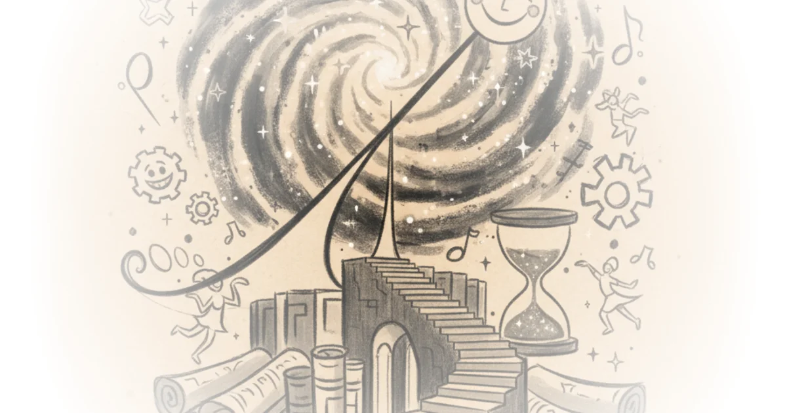

Helen De Cruz does not merely write science fiction; she constructs a philosophical trap where the reader must choose between the comfort of a circle and the terror of a line. In "Blessedness," she deploys a space opera to dissect the very nature of human ambition, arguing that our linear obsession with progress is not a path to salvation, but a guaranteed route to self-destruction. This is not a story about aliens or interstellar mining; it is a rigorous, unsettling inquiry into whether biological determinism dooms us to repeat the cycles of greed, regardless of our technology.
The Geometry of Anxiety
De Cruz opens by establishing a stark dichotomy that frames the entire narrative. She writes, "In the circle lies security: the huge cycle of death and rebirth... By contrast, humans are creatures of the line. In the line lies anxiety." This distinction is the story's engine. The protagonist, an entity named Bento, inhabits a human body to infiltrate a wealthy family, yet he observes humanity from a detached, almost alien perspective. De Cruz uses this distance to highlight a specific human flaw: our inability to be content with the present moment. As she notes through Bento's internal monologue, "The line always ends in greed, and ultimately, self-destruction."

The narrative choice to ground this high-concept philosophy in the gritty details of a con is brilliant. Bento is not a hero; he is a fraud rehearsing the mannerisms of a dead prince. He studies the late Robert de Méreaux, a young heir who allegedly threw himself into the void, to perfect his performance. De Cruz writes, "When you look hard enough, signs can always be found." This line cuts deep, suggesting that the search for meaning or identity is often just a projection of what we want to see. The story forces the reader to question the authenticity of the "return" of the prodigal son, mirroring the broader question of whether human progress is a genuine advancement or just a re-enactment of old failures.
Humans aren't eusocial. They descended from tree-dwelling, nimble-fingered social mammals. They make friends and lovers with just a few out of their vast numbers. And yet, they are more parasitic than we ever were.
The Parasitic Nature of Progress
The story's most provocative argument emerges when Bento reflects on his own kind. De Cruz posits that while humans are not biologically eusocial like the insects that inspired the story's extraterrestrial observers, they are functionally more parasitic. Bento observes that his own people abandoned parasitism for mutualism to ensure sustainable exploration, yet humans, despite their capacity for deep connection, seem driven to colonize and exterminate. This reframing of human nature as inherently exploitative is a bold move. It challenges the standard sci-fi trope of human exceptionalism.
De Cruz weaves in historical context to deepen this critique. She has Bento leaf through Pascal's Pensées, noting the human fear of the infinite: "The eternal silence of these infinite spaces terrifies me." This reference to Blaise Pascal's 17th-century meditation on the human condition anchors the futuristic setting in a timeless anxiety. The fear of the void drives the human characters to fill it with mining operations and wealth, even as the planet they inhabit, Blessedness, begins to poison. The family motto, "The winner controls the energy," becomes a chilling mantra for a civilization that consumes its own foundation. The father, Antoine, dismisses sustainability with brutal pragmatism: "We do not care about the losers... The Méreaux family has been in the business of mining for generations. We move on quickly as resources are depleted."
Critics might argue that this portrayal of humanity is overly cynical, ignoring the capacity for altruism and long-term planning that defines our species. However, De Cruz counters this by showing that even within the family, the drive for profit overrides the preservation of the home. The brother, Bernard, is horrified by the deception but equally complicit in the system that values the company over the brother. He snarls, "It would be righteousness if he were my elder brother. As it is, he is an impostor," yet his true grievance is the threat to his inheritance, not the moral breach.
The Illusion of Return
The climax of the piece is not a battle, but a game of Go. Bento, playing the role of the returned son, outmaneuvers his father on the board, symbolizing the shift in power and the inevitability of change. Yet, the victory feels hollow. The father admits, "I do not care if you have my blood in your veins or not... Your coming may be a blessing." The family accepts the impostor because he fits the narrative they need to sustain their power, not because he is the truth. De Cruz writes, "The DNA test begs to differ," highlighting how science is often co-opted to validate convenient fictions.
The story ends on a note of unresolved tension. Bento watches the dolphins of Blessedness, creatures that communicate with complex light patterns, a stark contrast to the human obsession with linear progress. He wonders about their language, which rivals human complexity but lacks the destructive drive. The final image is of a loose tile falling from the roof, a subtle warning of the structural decay beneath the family's opulence. De Cruz leaves the reader with the unsettling thought that the "blessedness" of the title is a trap, a gilded cage built on the very greed that will eventually destroy it.
Bottom Line
Helen De Cruz's "Blessedness" is a masterclass in using speculative fiction to interrogate the limits of human nature. Its greatest strength lies in its refusal to offer a heroic solution, instead presenting a mirror that reflects our own linear anxieties and parasitic tendencies. The piece's vulnerability is its unrelenting pessimism, which may alienate readers seeking hope, but it is precisely this grim clarity that makes the argument so compelling. As the story suggests, we must decide whether to remain trapped in the circle of our own making or to find a new way to navigate the line before it ends in self-destruction.